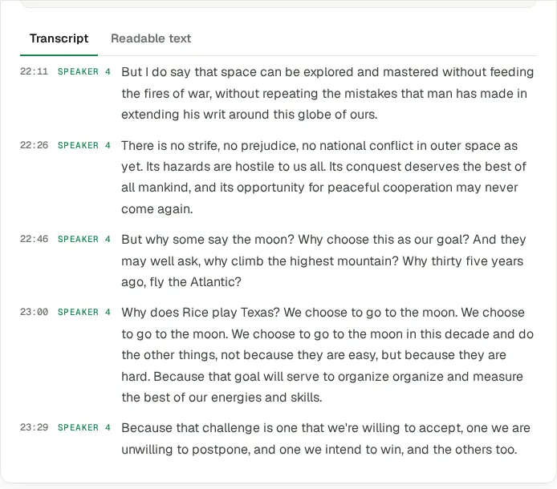
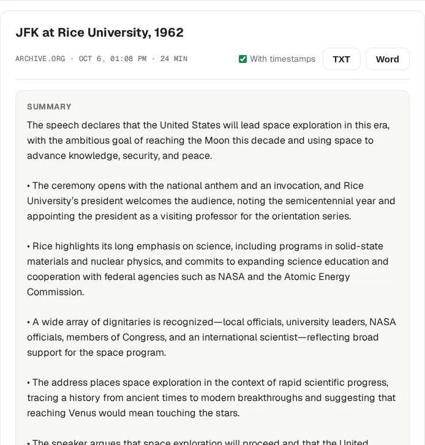
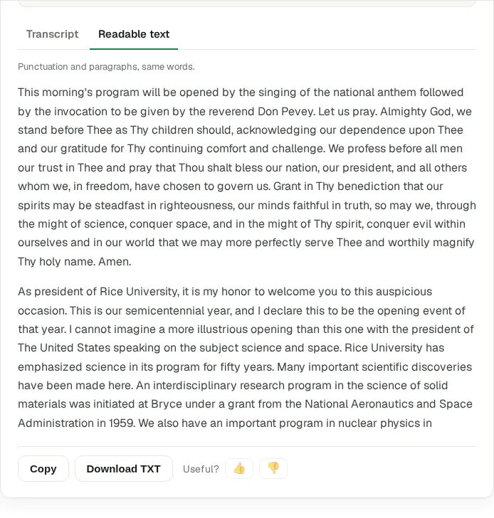

Can ChatGPT transcribe a video?
Short answer: not reliably, and not from a link. We checked what ChatGPT can and can't do with video as of October 2026, then ran a real 24-minute recording through the workflow that does work. Results, timings and screenshots are below.
What ChatGPT can and can't do with video (October 2026)
- Paste a YouTube link. ChatGPT can't play the video. It either says it can't access it, or writes a summary from the title and description that sounds specific and isn't. Independent tests published in 2026 report both outcomes.
- Upload a video file. OpenAI's list of supported file types covers documents, spreadsheets, presentations, text and images. Video and audio are not on it. Some accounts accept an audio file anyway, but there is no documented limit and no guarantee the whole recording gets processed.
- Record mode. The ChatGPT desktop app for Mac can record a meeting from your microphone and system sound and transcribe it. It's on paid plans only, Mac only, and it records live, so it doesn't open a video file you already have.
- The API. Developers can send audio to OpenAI's transcription models. That's code, not a chat window.
So the words have to come from somewhere else. Once you have them, ChatGPT is very good at the next step: summaries, quotes, translations, study notes.
The workflow that works
- Open the video in Chrome and click Transcribe Video to Text. If the video has YouTube captions, the transcript appears in seconds. If it doesn't, the extension listens while the video plays and writes the text as it goes, with timestamps and speaker labels.
- Copy it, or export it to TXT, SRT or Word.
- Paste it into ChatGPT. Or skip that step: the transcript page now makes a summary and a readable version on its own.
A real test: JFK's “We choose to go to the Moon”
We took a 24-minute film of John F. Kennedy's 1962 address at Rice University from the Internet Archive. It has no captions, so this is the harder path: speech recognition. We ran the audio through the same speech engine and settings the extension uses (Deepgram Nova-3, speaker labels on). In the extension this happens while the video plays, so a 24-minute video takes 24 minutes.

What came out:
- 2,344 words and 4 speakers told apart: the announcer, the chaplain, Rice's president and Kennedy.
- About 1 word in 80 off. We compared Kennedy's part (about 1,100 words, the film doesn't include the whole speech) with the official text published by Rice University. Around 14 words differed, mostly dropped small words like “in” and “and”. Numbers came out as words: “fifty thousand”, not “50,000”.
- Names are where it slips. “Rice” came out as “Bryce” once. Check names before you quote them.
Summary and readable text, without ChatGPT
On the transcript page we pressed Summarize and then Get readable text. The summary took about 40 seconds, the readable version about 30.

An honest note: the summary spends two bullets on the opening ceremony and the guest list, because the recording does. If you only want Kennedy's argument, paste the transcript into ChatGPT and say so. That's where a chat beats a one-click summary.

When ChatGPT is still the right tool
The extension gets you the words and a quick summary. ChatGPT is better once you want to work with the text: ask follow-up questions, rewrite it for a different audience, translate it, or compare two talks. They work best together: the transcript from the extension, the thinking from ChatGPT.
What's free
Videos with YouTube captions are free with no limit. Videos without captions use credits: 10 free a month, the first 3 without an account, then a free Google sign-in. Export to TXT, SRT and Word is included.
Related guides
Turn any video into text for AI
Speaker layout, timestamps, export to Word, TXT or SRT. Free to start.
Add to Chrome · free